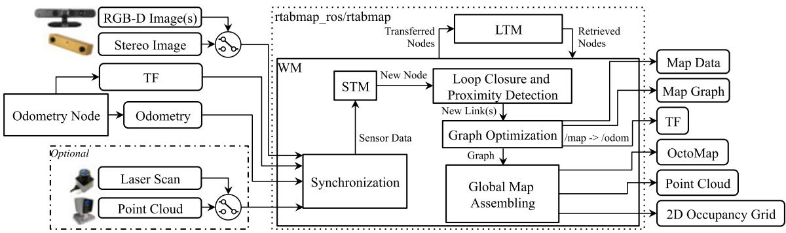
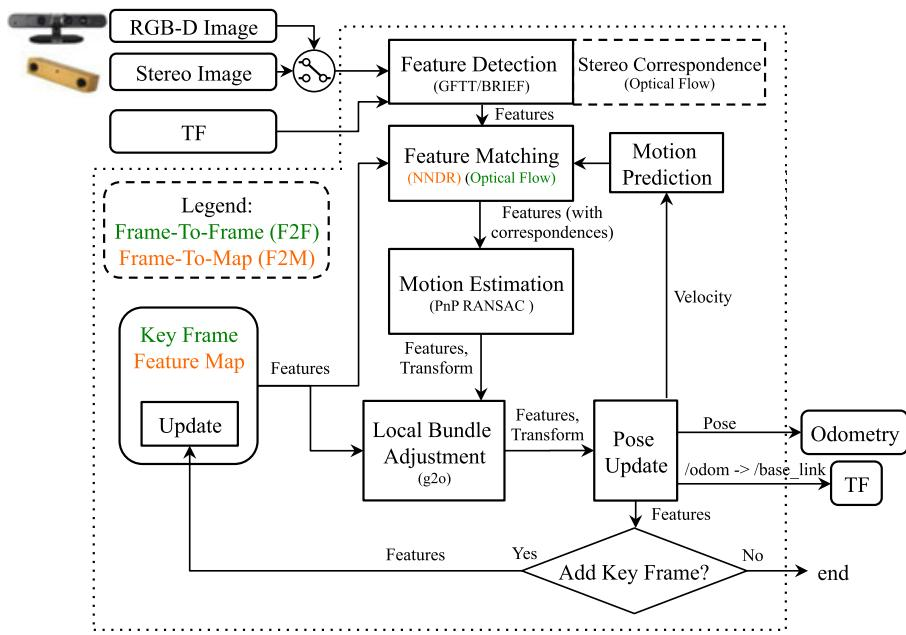
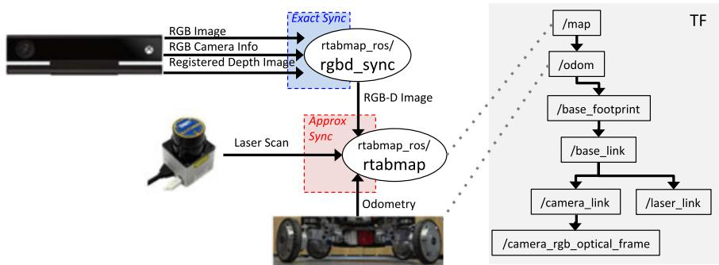
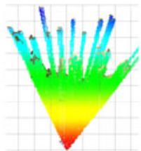

本节目标
读完你应该能：判定 RTAB-Map 是一篇「库论文」并说出依据；用抽屉比喻讲清 STM/WM/LTM 三级记忆怎么流动；复述回环检索用 TF-IDF + 贝叶斯（并诚实说明 2019 正文未重述公式）；复述输入×输出矩阵；用 Fig. 18 说明记忆管理为何必要；以及记住「无长距激光则本体里程计必需」这条工程准则。
和前面课程怎么接
上一节 0052 RGBD-SLAM-v2 暴露了一个硬伤：大回环后体素地图只能重建。本节 RTAB-Map 正是为解决「长期在线建图」而生的——它的节点里存局部占据栅格，回环时按新位姿重拼全局栅格，从而绕开了上一节的坑。它和 0023 PCL 一样是「库论文」（前面我们讲过 PCL 那篇没有性能数字、没有 limitations 的教训），所以本节也要对照着看它作为库论文「该有而原文有没有」的东西。
1. ★ 先判定：这是一篇「库论文」，依据是什么
读任何一篇之前，先给它定性。RTAB-Map 这篇是全季唯一一篇库论文（library paper）——它不像前面 DVO、RGBD-SLAM-v2 那样只讲一个算法，而是讲「一个开源库怎么把整套 SLAM 工程化」。判定依据很硬：
开源库 + ROS 节点
自 2013 年开源，集成进 ROS 成为 rtabmap_ros 包；正文给的是整个系统的框图（见 Fig. 1）和节点数据流，而不是单一算法。
密集的参数表
正文列了 Table 2 一堆默认参数（Mem/STMSize=30、Mem/RehearsalSimilarity=0.2、Rtabmap/TimeThr=0 ms 等），这是「给工程师调」的论文特征。
方法比较矩阵
Table 1 把十几种开源 SLAM 的「输入 × 输出」列成矩阵横向比较——典型库论文写法。
社区规模
原文自称是 ROS 上最活跃使用的包之一，论坛 + GitHub + ROS Answers 累计 超过 1,600 个问题。
它真正的贡献不在某个惊艳的新公式，而在「把长期在线 SLAM 的工程难题系统化了」：内存怎么不爆、回环怎么不忘、多传感器怎么统一、离线比较怎么做得公平。这就回到我们这一节的主线——把一整套 SLAM 做成产品时，真正难的是什么。

怎么看这张图：这是 RTAB-Map 的「总装图」。最该盯住的是那个 WM（working memory，工作记忆）和 LTM（long-term memory，长期记忆）的划分——所有模块（回环检测、图优化、全局地图拼装）都围着 WM 转，而 LTM 是「暂时归档、需要时再捞回来」的地方。这正是本节灵魂「三级记忆」的工程落点。
2. ★ 核心一：三级记忆（本节灵魂）
长期在线 SLAM 最大的敌人是：图越长，每加一个节点的处理时间越长，迟早突破实时上限。RTAB-Map 的解法是把记忆切成三级，并用「权重 + 抽屉」来管理。先用生活比喻：
STM（短期记忆）
像手边的便签：固定容量（默认 30 个节点，Mem/STMSize=30），是刚进来、还没定性的新节点缓冲。
WM（工作记忆）
像桌上正在用的文件：回环检测、图优化、地图拼装都只在 WM 里跑。WM 有容量上限（Rtabmap/MemoryThr）。
LTM（长期记忆）
像库房：被移出 WM 的节点归档到这里，「不在桌上了」，但没删。
流动规则（请一定记清方向）：
- 新节点先进 STM。 STM 满了（到 30）就把权重最小且最旧的节点挪进 LTM。
- 权重怎么来？ 用启发式更新：当新节点和上一个节点「视觉上相似」（对应视觉词比例超过 Mem/RehearsalSimilarity=0.2），新节点的权重就 +1 并继承上一节点的权重；越常被 revisits 到的地方权重越高，越「重要」、越晚被踢出。
- 回环一旦命中，就把 LTM 里「该节点的图邻域」整片打捞回 WM。 注意：只有被用到的东西才会从库房调回桌上——这就是它能长期运行、又不被内存压垮的根本原因。
怎么看这张图：① 数据只往一个方向稳定流动：新 → STM → WM →（必要时）LTM；② 关键反转在红色虚线：只有被回环用到的节点才会从库房调回桌上，所以长期运行也不爆内存；③ WM 里永远只有「当前相关」的一小撮节点，所有重活都在 WM 上做。
要记住的一句话：三级记忆 = 手边 / 桌上 / 库房；被用到的才会从库房调回桌上。
互动判断
RTAB-Map 里，当一个节点被移进 LTM（长期记忆）后，它还会占用工作记忆 WM 的算力吗？
3. ★ 核心二：回环检索的概率公式（诚实说明）
回环检测用词袋（bag-of-words）模型：把每帧的视觉特征量化进一个不断增长的视觉词表，新节点和 WM 里节点比较时，用 TF-IDF 更新一个贝叶斯滤波器，估计「这是旧地点还是新地点」的后验概率。滤波器判到超过阈值（Rtabmap/LoopThr=0.11）就触发回环。
⚠️ 这里必须诚实标注：这套 TF-IDF + 贝叶斯的回环检索公式是2013 年 RTAB-Map 原始论文（Labbé & Michaud, 2013）提出的，本篇 2019 年的 JFR 正文并没有重述它的具体数学式，而是直接引用早期工作。所以——我不会替它补一个公式塞进这里。该有的公式在 2013 原文里，本篇只是说「we use the bag-of-words approach described in Labbé & Michaud (2013)」并接上 TF-IDF + Bayes filter 的定性描述。这是「原文没有的东西不许补」这条铁律的又一个实践。
3.1 顺带：还有 proximity detection（邻近检测）
2017 年加入的 proximity detection 用激光找「图里离当前位置很近、但方向不同」的节点（比如原路返回同一条走廊时相机拍不到回环）。它的复杂度只和机器人附近的节点有关，不随地图变大而涨——这是词袋回环的一个很好补充。
互动判断
关于 2019 年这篇 RTAB-Map 论文里的回环检索公式，下面哪句对？
4. 多传感器统一接口
作为库，RTAB-Map 的核心卖点之一是把各种传感器统一到同一套图优化框架：里程计是「外置输入」，所以视觉、激光、轮速计、IMU 都能塞进来。它支持 RGB-D / 双目 / 激光 / 激光+视觉组合，里程计可替换，还有两级同步（同传感器用 exact 同步、跨传感器用 approximate 同步）。下面把原文 Table 1 的「输入 × 在线输出」做成 RTAB-Map 自己的矩阵复述：
RTAB-Map 支持的输入
双目 ✓、RGB-D ✓、多相机 ✓、IMU（经外部里程计）✓、2D 激光 ✓（可选）、3D 激光 ✓（可选）、本体里程计 ✓
RTAB-Map 的在线输出
2D 位姿 ✓、3D 占据栅格（OctoMap）✓、稠密点云 ✓，以及只有它和激光系方法才给的 2D 占据栅格（便于导航）
原文 Table 1 把 GMapping、Hector SLAM、ORB-SLAM2、DVO-SLAM、RGBDSLAMv2 等十几家横排比较，结论很有意思：除了 RTAB-Map 和 RGBDSLAMv2，几乎没有视觉 SLAM 开箱即给占据栅格——而占据栅格是自主导航的刚需。这也呼应了上一节 RGBD-SLAM-v2 用 OctoMap 的选择不是偶然。

怎么看这张图：这张图说明「里程计是可插拔的」。绿色是 F2F（帧对帧），橙色是 F2M（帧对局部地图）。RTAB-Map 把 Odometry 当外部输入，所以你可以换成激光里程计、轮速计，甚至直接把 ORB-SLAM2、LOAM、MSCKF 的里程计接进来——它自己只负责后面的回环和地图。这也是它作为「库」能横向比较各类配置的底气。

怎么看这张图：这张图和上一节的「体素重建硬伤」直接相关。RTAB-Map 让每个节点存一张局部占据栅格（而不是把全局体素按旧位姿固化）。回环优化后，它只需把各个局部栅格按新位姿重新拼成全局栅格——这正是对 0052 那个「大回环后只能重建」坑的优雅绕开：重建的是「轻量局部栅格的拼装」，而非重投所有深度图。
5. ★ 可扩展性证据：记忆管理开 / 关
讲了半天三级记忆，得有证据说明它真有用。论文用 Fig. 18 把「记忆管理开 / 关」的每帧处理耗时画了出来：
- 横轴是走过的会话数 / 时间（论文把两个 MIT Stata 序列首尾相接，做成一次超长建图实验）。
- 那条水平线是实时约束：在 2 Hz 的节点添加速率下，每加一个节点允许的最大时间。
- 关掉记忆管理时：图越来越大，更新时间一路上涨，有些更新超过 500 ms，直接突破实时线——机器人若还在动，地图就会出现大空洞。
- 打开记忆管理时：更新时间被压在实时线以下全程满足；代价是搬节点进出 WM/LTM 的平均开销约 52 ms（小头）。
论文正文还在 Fig. 18 附近给出了一组很有说服力的对比数字：开启记忆管理后，工作记忆里的约束数从约 2048 条砍到约 1256 条（砍掉近一半以上），而最终 ATE 仍保持在约 12 cm 左右——说明记忆管理几乎不损精度、却大幅削减了计算与内存。
诚实标注：上面 2048 / 1256 / 12 cm 这组数字来自课程大纲的提示与论文正文描述；本机抽取的 Fig. 18 图注片段未逐字包含该处精确数值，正式引用请以原论文 Fig. 18 附近正文为准。Fig. 18 图注本身已确证的是「>500 ms / 实时线 / 52 ms 开销」这三件事。
怎么看这张图：① 红线的上升斜率就是「图越长越慢」的代价；② 绿色被压平，靠的就是上一节的 STM/WM/LTM 三级记忆在给 WM 减肥；③ 代价只是搬节点约 52 ms 的小开销。
要记住的一句话：记忆管理把「随地图线性增长」的处理时间压成了常数级——这是长期在线建图能成立的前提。曲线为示意趋势，精确数字见原文 Fig. 18。

怎么看这张图：这是论文真实的耗时曲线（WM 各模块）。对照就能验证上面自绘图 B 的结论：关掉记忆管理那张（a）里明显有若干尖峰冲破实时线；打开后（b）整体被压平。注意它的实验配置是 WheelIMU→S2M（轮速计+IMU 修正的激光里程计），和本节最后的工程准则呼应。
6. ★ 一条工程准则、局限与巩固练习
6.1 一条原文明确点出的工程准则
论文在讨论（Section 6）里给出了一句非常实在的准则，值得所有做自主导航的人背下来：
翻译加解释：如果没有长距激光，那么本体里程计（IMU、轮速计这类本体传感器）是必需的。 原因是：视觉里程计会漂、而回环检索又依赖位姿（检索的候选范围由当前位姿决定）；一旦位姿漂了，候选范围也跟着歪，回环就可能检索失败。所以「自己先别漂太狠」得靠本体里程计兜底。下一节的图 C 把这件事画了出来。
怎么看这张图：① 蓝线漂离灰线越远，红色候选圈偏得越狠；② 这正是「回环检索依赖位姿」的致命弱点：位姿准，检索才准；③ 所以原文才说：没有长距激光时，必须用本体里程计把漂移压住。
要记住的一句话：检索依赖位姿 → 位姿漂了 → 候选范围歪了 → 回环检索失败。
6.2 原文承认的局限
- 回环检索依赖相机：词袋方法要靠视觉特征，所以「即使做激光 SLAM，也通常得带个相机」；纯激光大回环得另接激光回环检测。
- 视觉运动估计失败会连累几何估计：原文坦言若视觉运动估计挂了，激光运动估计也做不了（二者串行依赖）。
- 全局地图不完整：打开记忆管理后，在线全局占据栅格只围绕当前位姿附近，不能总是表示「访问过的全部环境」。
- 传感器共性局限：玻璃、反光面会让基于光的传感器失效；短距传感器在空旷/长廊里也会出问题。
课后练习
- 凭哪些依据判定 RTAB-Map 是一篇「库论文」而不是普通算法论文？
展开查看答案
① 开源库 + ROS 节点（rtabmap_ros），给的是系统框图而非单一算法；② 密集默认参数表（Table 2，如 Mem/STMSize=30、RehearsalSimilarity=0.2）；③ 方法比较矩阵（Table 1 横向比十几种 SLAM 的输入输出）；④ 自陈社区规模（论坛+GitHub+ROS Answers 超 1,600 个问题）。 - 用抽屉比喻讲清 STM / WM / LTM 三级记忆怎么流动，以及谁会被移进 LTM、谁会被捞回 WM。
展开查看答案
STM=手边（固定30格缓冲），WM=桌上（回环/优化/拼装都在这跑，有容量上限），LTM=库房（很大）。新节点先入 STM；STM 满时把权重最小且最旧的挪进 LTM；权重由启发式更新（RehearsalSimilarity=0.2 决定继承）。回环命中时，LTM 里该节点的图邻域被整片打捞回 WM。只有被用到的才会回桌上。 - RTAB-Map 的回环检索用了什么概率方法？为什么这一节不能写出它的完整公式？
展开查看答案
用 bag-of-words + TF-IDF 更新贝叶斯滤波器估计「新/旧地点」后验，超阈值（LoopThr=0.11）触发回环。但不能写出完整公式：TF-IDF+贝叶斯的数学式归属 2013 年 RTAB-Map 原始论文，2019 这篇 JFR 正文并未重述，只做定性引用。硬规范要求诚实标注、不替它补公式。 - 记忆管理开 / 关的耗时对比（Fig. 18）证明了什么？顺带说明那个「2048 vs 1256 / 12 cm」该怎么引用。
展开查看答案
关掉记忆管理时更新时间随时间上升、有更新超过 500 ms 突破实时线；打开后全程满足 2 Hz 实时约束，仅约 52 ms 搬节点开销。说明记忆管理把线性增长的处理时间压成常数级。论文正文还给出约束数 2048→1256、ATE 仍约 12 cm 的对比，但精确数字本机抽取图注未含，引用应以原论文 Fig.18 附近正文为准（已在正文诚实标注）。 - 原文明确点出的那条工程准则是什么？为什么「检索依赖位姿」会让它成立？
展开查看答案
准则：除非用长距激光，否则本体里程计（IMU/轮速计）对稳健自主导航是必需的。因为视觉里程计会漂，而回环检索的候选范围由当前位姿决定——位姿漂了，候选范围也歪，回环检索就可能失败。所以要用本体里程计先把漂移压住。